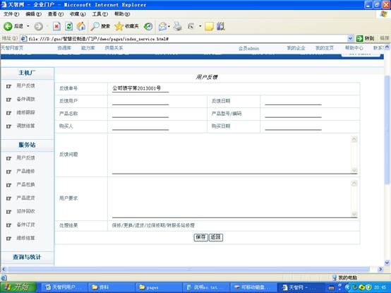
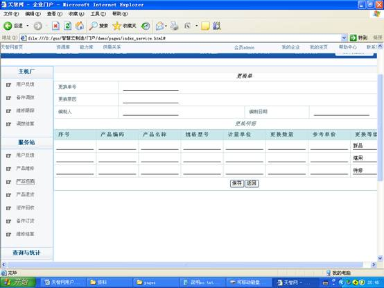
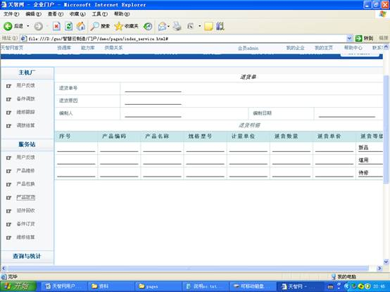
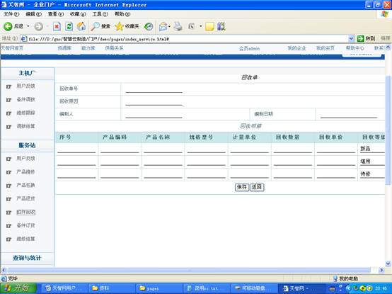
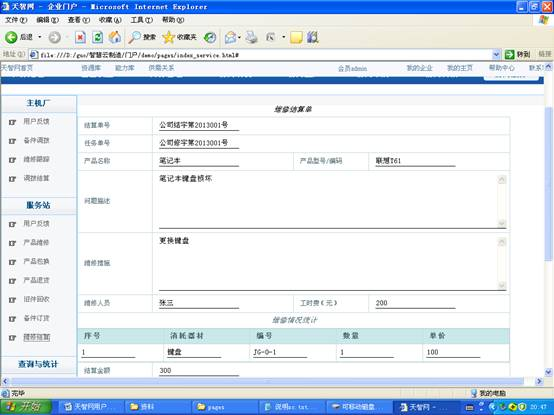
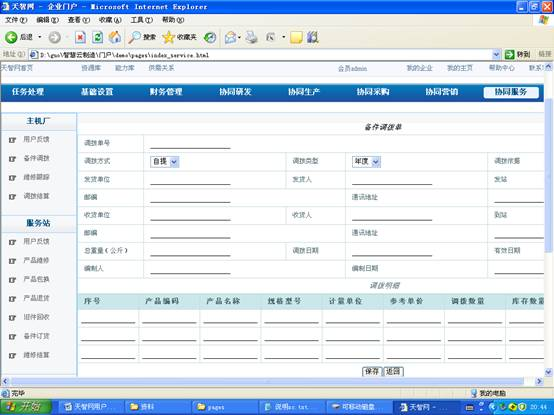

负责全部售后服务活动，包括与服务商对接，发起和跟踪维修任务，发起订货申请等，按照企业参与身份不同，可分为主机厂和服务站。
一、服务站
（1） 反馈信息
服务站接收主机厂的用户反馈，也可发起用户反馈。
操作路径：协同服务--服务站--用户反馈

（2） 产品维修
发起维修任务，数据来源与用户反馈，也可主动新建任务。
操作路径：协同服务--服务站--产品维修

（3） 产品包换
三包服务，对售出产品进行更换服务。
操作路径：协同服务--服务站--产品包换

（4） 产品退货
三包服务，对售出产品进行退货。
操作路径：协同服务--服务站--产品退货

（5） 旧件回收
服务站对旧件进行回收。
操作路径：协同服务--服务站--旧件回收

（6） 备件订货
服务站向主机厂申请备件。
操作路径：协同服务--服务站--备件订货

（7） 维修结算
对维修流程进行结算。
操作路径：协同服务--服务站--维修结算

二、主机厂
（1） 用户反馈
主机厂以电话、邮件的形式接收用户反馈。
操作路径：协同服务--主机厂--用户反馈

（2） 备件调拨
主机厂根据服务站的订货申请生成调拨单，进行备件调拨发货。
操作路径：协同服务--主机厂--备件调拨
